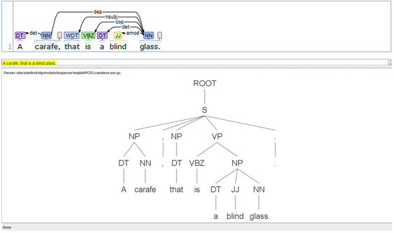
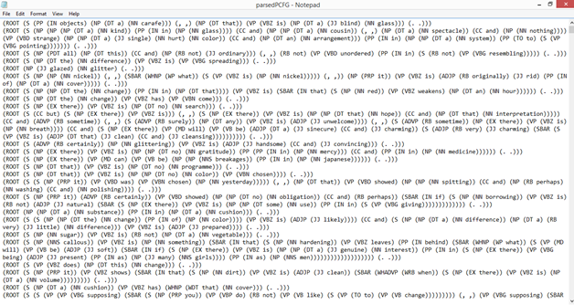
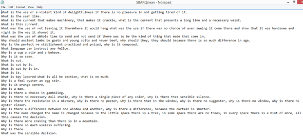

Cross-posted to the Scholars’ Lab Blog at https://scholarslab.lib.virginia.edu/blog/introducing-gs-grammars/
Hi! I’m Jordan Buysse, a sixth year PhD candidate in the English department and one of the Scholars’ Lab fellows this year. I work on modern and contemporary literature, media studies, and text analysis. My dissertation is about the relationship between literary works and information. In math and computer science, information refers to a type of communication that has nothing to do with meaning. But this definition is at odds with the colloquial sense of the word and its longer etymological history, which is about informing people–shaping the mind. As it turns out, these two opposite senses of the term actually have a lot to say about what goes on when we read different types of literary works. So far I’ve written chapters about novels that work like search engines and a poet who writes all of her work algorithmically. For my fellowship project and the associated chapter, I’m working on the modernist poet Gertrude Stein. My work with Stein is a little bit different because, while the other chapters have been heavily informed by ‘data’-centric approaches to literary studies, it is the first chapter where I am doing significant computational work for the sake of my argument. I’m going to get into how that works in future blog posts, but here I actually want to look back at how my thinking has developed. My work with Stein starts a long time ago in my first year of grad school. I was really interested in some of the natural language processing tools that were being developed at the time, in particular things like the Stanford parser that could determine and tag the parts of speech for a given text.

I presented an early incarnation of this research at the 2015 ACLA conference under the title “Tender Buttons and Regular Expressions.” The earlier paper on Tender Buttons mostly revolved around Stein sentences that were actually questions although they contained no question mark. I used this specific case to demonstrate that, while these questions were invisible to “bag of words” tokenization, they were quite easy to track using grammar parsers and regular expressions. Grammar parsing also proved to eliminate a large number of false positives, flagging a sentence like “what is the wind, what is it” while passing over sentences like “A large box is handily made of what is necessary to replace any substance.” The increased technical difficulty of using grammar parsers over n-grams or regular expressions is justified by these edge cases, which are abundant in “Steinese” My methods back then were fairly laborious–I used the Stanford Parser with different pre-trained models to tag the initial text, and then adapted individual Python scripts to spit out ‘cleaned’ versions of the text according to different features. Below you can see screenshots of .txt files with the initial markup and with extracted matching features.


For this initial paper, there were some fancier theoretical arguments about digital versus analog ‘reading,’ but the truth is that I was much more interested in seeing if the methods worked than making any specific literary-critical argument about Stein. I left the Stein project alone for a while because I wasn’t sure what to do with it. While I certainly saw a lot of potential in the methods I used here, the ability to isolate questions itself wasn’t going to do much for a larger argument about her work. As time went on, there were some remarkable advances in the tools available for grammar parsing that led me to revisit this initial work in the area. I’ll talk more about those in blog posts later this semester. In a lot of ways, what I’m working on now is a more elegant solution to questions I was posing back in 2015. Instead of tagging text files one by one and writing custom regular expressions to reassemble the text in different forms, my current work streamlines the process to make it accessible to anyone with an interest in posing questions about the shape of grammar to a given text. I’ll leave it at that for now, but watch this space for more in the coming months!